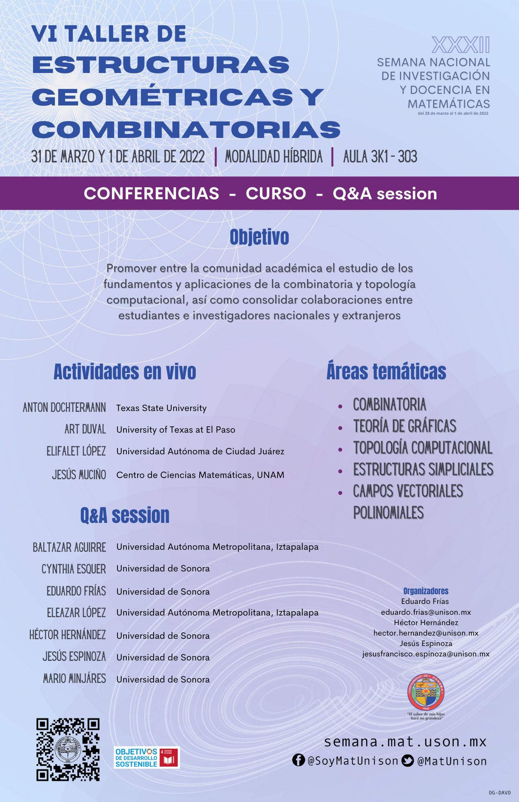

Acerca del evento
La Universidad de Sonora a través del Departamento de Matemáticas de la División de Ciencias Exactas y Naturales, invita a estudiantes de licenciatura y posgrado del país, profesores e investigadores a participar en las actividades de la trigésima segunda edición de la Semana Nacional de Investigación y Docencia en Matemáticas, a realizarse del 28 de Marzo al 1 de Abril de 2022.
Dónde
Universidad de Sonora y plataformas digitales.
Cuándo
Lunes a Viernes
28 de Marzo al 1 de Abril de 2022
Ponencias
El Departamento de Matemáticas de la Universidad de Sonora extiende una cordial invitación a profesores, investigadores y estudiantes para que envíen propuestas de ponencias a presentarse en el marco de la XXXII Semana Nacional de Investigación y Docencia en Matemáticas, evento que se realizará del 28 de marzo al 1 de abril de 2022 en modalidad híbrida.
En esta ocasión, las ponencias se realizarán de manera virtual a través de videos grabados que se colocarán en la página del evento, con una duración de 20 minutos.
El registro de solicitudes de ponencia se realizará en la página del evento del 2 al 22 de febrero, mediante el Sistema de Ponencias
Se comunica que se amplía el plazo para la recepción de solicitudes de ponencias. La nueva fecha límite de recepción de trabajos será el día viernes 25 de febrero.
Consulta las ponencias aquí.
Sesión de carteles
La Sesión de Carteles es un espacio para la presentación de distintos trabajos en el área de Matemáticas, Computación y Matemática Educativa o Docencia. Esta actividad tiene como objetivo crear un espacio en el evento donde los estudiantes y docentes puedan presentar resultados de investigación sobre temas de interés común. Para ello, se presentan carteles que contienen texto y gráficos relativos a los temas que correspondan, motivando con ello la interacción entre asistentes y expositores, a través de una mecánica de preguntas y respuestas sobre los temas expuestos en los carteles. En esta ocasión, se ha buscado una forma de comunicación que permita una interacción virtual a través de un sitio web que permita a los asistentes la revisión del material en formato PDF que puede ser visualizado fácilmente en un navegador.
Es por ello que la dinámica de presentación de esta sesión se realizará de manera virtual en la página del evento.
Para elaborar los carteles se puede considerar el formato en PowerPoint disponible AQUÍ (formato-cartel.pptx) o alguno de su preferencia que contenga la información que se requiere. El cartel será enviado en formato PDF.
Se comunica que se amplía el plazo para la recepción de carteles. La nueva fecha límite de recepción de trabajos será el día lunes 7 de marzo.
Consulta los carteles aquí.
Concurso de producción multimedia
Las matemáticas además de formar parte de nuestra vida diaria son muy interesantes. Por ello, el Departamento de Matemáticas de la Universidad de Sonora convoca a la comunidad estudiantil a participar en el concurso
"Compartiendo matemáticas en cinco minutos o menos"
con el fin de contribuir en la divulgación del conocimiento matemático por medio de la elaboración de materiales audiovisuales usando un lenguaje creativo, simple y accesible para una audiencia no especializada.
El comité organizador de la XXXII Semana Nacional de Investigación y Docencia en Matemáticas invita al público en general a que visite la página oficial de Facebook del Departamento de Matemáticas @SoyMatUnison espacio donde se publicarán los videos y además, se otorgará un estímulo económico a los participantes que resulten ganadores. Los resultados se darán a conocer el 1 de abril en la clausura del evento.
Talleres
12º Taller de sistemas dinámicos y control

VI Taller de estructuras geométricas y combinatorias
Ver aquí los videos para la sesión de preguntas y respuesta Q&A
Taller de probabilidad y sus aplicaciones


Para mayor información acerca de los talleres, consultar el programa del evento.
Sesión de divulgación de la Ciencia
Esta sesión contempla un programa de actividades abierto al público en general, aunque dirigidas especialmente a estudiantes de preparatorias y estudiantes pertenecientes a algún programa en matemáticas. El objetivo general de esta actividad es promover el interés por las ciencias matemáticas y computación.
Ponencias lunes 28 de marzo:
- El infinito, fractales y tortugas 8:30-9:30
- ¡No confundas Topología con Topografía! 9:30-10:30
- Matematicas para la toma de decisiones 10:30-11:30
Todas las ponencias del lunes serán en modalidad virtual. Registro (aquí).
Ponencias martes 29 de marzo:
- Poliminos: El siguiente paso del Tetris! 8:30-9:30 en el Auditorio Mat. Enrique Valle Flores
- Mendel: Genética y Matemáticas 9:30-10:30 en modalidad virtual
- Los fantasmas del Castillo de la Alhambra 10:30-11:30 en el Auditorio Mat. Enrique Valle Flores
Registro para la ponencia virtual del martes (aquí).
Mesa de diálogo: Posibles campos laborales para matemáticos y científicos de datos
Panelistas invitados:
- Mayra Lorena Quiroz Vazquez: Licenciada en Matemáticas y con Maestría en Economía Matemática. Labora en Crédito y Analítica de Servicios Financieros, Coppel S.A. de C.V. L.E.
- Luis Armando Moreno Preciado: Titular de la Unidad de Evaluación de Políticas y Programas Públicos Instituto Superior de Auditoría y Fiscalización. Economista y estudiante de la Maestría en Ciencia de Datos.
- M.E. Ernesto Urbina Miranda: Director General de la ONG: Hermosillo, ¿como vamos?
Moderadores:
- Dr. Jose Arturo Montoya Laos: Académico del Departamento de Matemáticas de la Universidad de Sonora.
- Dra. Gudelia Figueroa Preciado: Académica del Departamento de Matemáticas de la Universidad de Sonora
Todas las conferencias y la mesa de diálogo de esta sesión serán transmitidas por la página oficial de Facebook del Departamento de Matemáticas @SoyMatUnison
Poster de la sesión de divulgación de la Ciencia aquí.
Cursos
-
Introducción a la modelación matemática de procesos evolutivos
Dr. Jorge X. Velasco (UNAM)
Objetivo: Introducir a los asistentes los conceptos y ecuaciones básicas de la mutación y la selección natural dando lugar a la en la dinámica evolutiva. Así como que adquieran un manejo básico de las herramientas necesarias para la modelación de la dinámica evolutiva.
Modalidad: híbrida
Lunes y martes 8:00-9:30 hrs, miércoles 8:00-10:00 hrs
-
Polinomios y Estabilidad de Sistemas Lineales
Dr. Baltazar Aguirre (UAM)
Objetivo: que los asistentes tengan un panorama de las herramientas para verificar la estabilidad de un sistema lineal de ecuaciones diferenciales.
Modalidad: presencial
Miércoles a viernes 8:00-10:00 hrs
-
Uso de Fathom para el desarrollo del pensamiento probabilístico en el nivel medio superior*
Dra. Angélica Moreno Durazo (UniSon) y Dr. Eleazar Silvestre (UniSon)
Objetivo: Analizar y discutir la importancia de promover el uso de herramientas tecnológicas en el aula de matemáticas de nivel preparatoria para el desarrollo del pensamiento probabilístico.
Modalidad: presencial
Martes a jueves 16:00-18:00 hrs, viernes 15:00-17:00 hrs
*Exclusivo para profesores de educación media superior -
Algoritmos básicos en teoría de grafos
Dr. Eduardo Frías Armenta (UniSon) y Dr. Héctor Hernández Hernández (UniSon)
Objetivo: introducir a los asistentes a los conceptos y algoritmos principales en la teoría de grafos.
Modalidad: híbrida
Miércoles y jueves 16:00-18:00 hrs, viernes 15:00-17:00 hrs
-
La magia de divulgar las Matemáticas
Dr. Ignacio Barradas (CIMAT)
Objetivo: se plantea presentar una gran cantidad de ejemplo de diversas áreas; desde aritmética, teoría de números, álgebra, hasta sistemas dinámicos. Con ellos se presentan actividades didácticas asociadas. Se incluyen algunos juegos de magia.
Modalidad: híbrida
Lunes y martes 16:00-18:00 hrs
-
Teoría básica de funciones armónicas
Dr. Jorge Rivera Noriega (ITAM)
Objetivo: nos proponemos presentar algunos conceptos básicos y propiedades fundamentales de las funciones armónicas, motivados en algunas ideas y aplicaciones clásicas. Se le tratará de dar énfasis a las técnicas del análisis real, dejando la variable compleja sólo para ciertas descripciones .
Modalidad: presencial
Lunes y martes 9:40-11:40 hrs
-
Taller para promover la competencia de análisis ontosemiótico mediante tareas sobre sucesiones lineales**
Kevin Zamyr Vázquez Gutiérrez (UniSon)
Objetivos: que los profesores de nivel secundaria:
- Resuelvan situaciones problema en contextos extra – matemáticos.
- Identifiquen cuáles son los significados que pretenden las secuencias didácticas.
- Reconozcan cuáles son los objetos matemáticos primarios (intervinientes y emergentes).
- Identifiquen los procesos matemáticos que promueven las secuencias didácticas.
- Reflexionen sobre la importancia de proponer situaciones – problema que permitan la riqueza en objetos matemáticos para el estudio de su interrelación.
- Generen conciencia de la experiencia que acaban de vivir sobre la relevancia de identificar los objetos y procesos matemáticos en las prácticas matemáticas de sus estudiantes.
Modalidad: virtual
Lunes a jueves 16:00-18:00, viernes 15:00-17:00
**Exclusivo para profesores de educación secundaria activos -
Introducción al Procesamiento del Lenguaje Natural y aplicaciones de Aprendizaje Profundo
Dr. Jesús Miguel García Gorrostieta
Objetivo: brindar a los participantes las nociones básicas de procesamiento del lenguaje natural desde el preprocesamiento del texto para comprender en qué consiste la tokenización utilizada en la creación de representaciones vectoriales. Dichas representaciones son empleadas en las tareas de PLN como por ejemplo para la clasificación de polaridad y temática. Además, se dará una breve introducción a la librería de Transformers Hugging Faces.
Modalidad: virtual
Lunes a miércoles 18:00-20:00 hrs
-
Sobre el uso de álgebras en ecuaciones diferenciales
Elifalet López González (UACJ)
Objetivo: mostrar que la diferenciabilidad sobre álgebras constituye una herramienta que da luz en el campo de las ecuaciones diferenciales.
Modalidad: híbrida
Jueves y viernes 8:00-10:00 hrs y 13:00-14:00 hrs
Inscripciones a cursos aquí.
Sesión de Difusión de las Matemáticas
Participarán estudiantes inscritos en programas de maestría y doctorado del Posgrado en Matemáticas. El objetivo es difundir entre el público interesado, en particular a estudiantes de licenciatura de programas educativos relacionados a matemáticas, algunos temas de estudio e investigación que se desarrollan en el Posgrado de Matemáticas.
Se llevará a cabo de manera híbrida el miercoles de 9:00 a 11:35 hrs en el aula 3K1-303. Registro para la modalidad virtual aquí.
Presentación del libro "Temas y problemas selectos de Análisis Matemático, Teoremas de existencia y aplicaciones"
Este libro es un texto a nivel de estudios de posgrado en Análisis Matemáticos sobre los Teoremas fundamentales de existencia de soluciones y sus propiedades para tres tipos de sistemas de ecuaciones en espacios euclididanos: Ecuaciones no lineales en varias variables reales , Ecuaciones diferenciales ordinarias y Sistemas integrables de Campos vectoriales. El texto incluye pruebas completas de los Teoremas de función implícita, el Teorema de existencia para el Problema de Cauchy en Ecuaciones diferenciales ordinarias y el Teorema de integrabilidad de Frobenius para distribuciones regulares de Campos vectoriales. El texto incluye un conjunto de problemas y sus soluciones sobre aplicaciones de los resultados anteriores en áreas de cálculo diferencial, de los sistemas dinámicos y la geometría diferencial
Se llevará a cabo de manera híbrida el miércoles 30 de marzo de 10:30 a 11:30 hrs en la Sala Audiovisual.
Registro para la modalidad virtual aquí.

Mesa redonda: "Fenómenos de Propagación"
El Comité Organizador de la XXXII Semana Nacional de Investigación y Docencia en Matemáticas invita a la comunidad universitaria a celebrar el 58◦ aniversario de la fundación de la Escuela de Altos Estudios con la realización de nuestra tradicional mesa redonda. Contaremos con miembros de los Departamentos de Física, de Letras y Lingüística, y de Matemáticas, quienes en una agradable charla compartirán su opinión desde su perspectiva profesional, sobre “Fenómenos de Propagación”.
Participantes:
- Carlos Antonio Calcaneo Roldán (Departamento de Física)
- Manuel de Jesus Llanes García (Departamento de Letras y Lingüística)
- Rubén Flores Espinoza (Departamento de Matemáticas)
Se llevará a cabo en la Explanada del Departamento de Matemáticas el viernes a partir de las 17:00 hrs, y se transmitirá en vivo en @SoyMatUnison
Sesión en Ciencia de Datos
Durante esta sesión, los estudiantes de la primera generación de la Maestría en Ciencia de Datos presentarán los avances en el desarrollo de productos de datos, realizados en vinculación con sectores empresariales , institucionales y con la sociedad civil.
El objetivo de esta sesión es mostrar a todos los interesados en la ciencia de datos ejemplos de aplicaciones y su interés en diferentes sectores.
Se llevará a cabo de manera híbrida el jueves de 17:00 a 20:00 hrs en la Sala Audiovisual.
Registro para la modalidad virtual aquí.